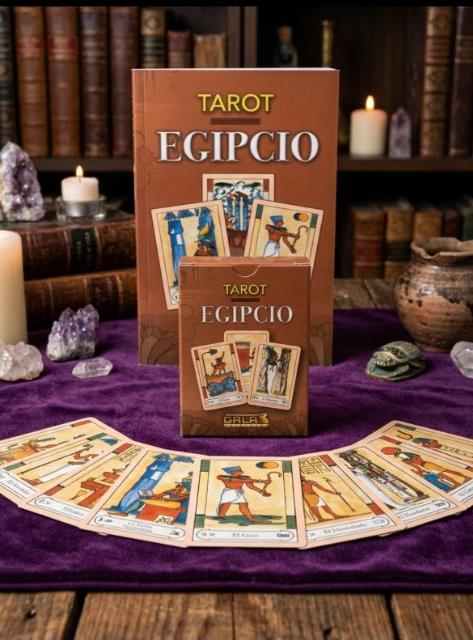

📚 Incluye Libro + Mazo ✦ Intuición
Cartas de Tarot
Tarot Egipcio + Libro Guía de Interpretación (Edición Completa)
Pack completo de sabiduría hermética: mazo de 78 arcanos del Tarot Egipcio más libro grande de estudio e interpretación simbólica y astrológica.